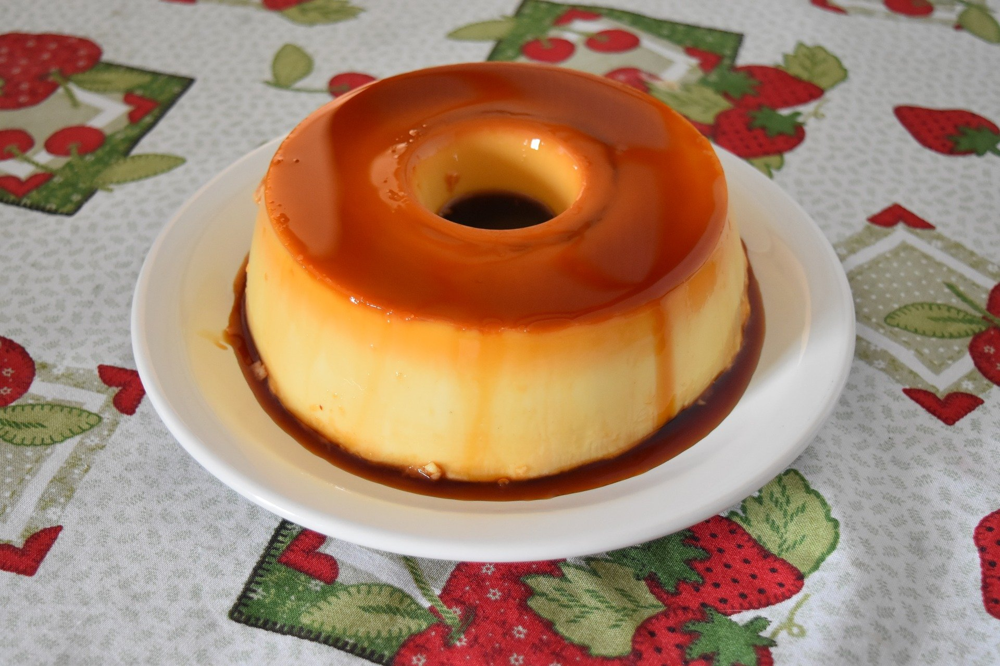

Receitas Doces
Brownie
 Ingredientes:
Ingredientes:
- 5 colheres de manteiga
- 3 ovos
- 3 xicara de achocolatado
- 6 colheres de açúcar
- 12 colheres de farinha de trigo
Modo de Preparo:
- Derreta a manteiga e reserve
- Enquanto derrete a manteiga, misture os 3 ovos e a açúcar e misture bem
- Acrescente a manteiga derretida no ovo e o açúcar
- Agora é so misturar o achocolatado e o trigo
- Unte uma forma com manteiga e achocolatado
- Leve ao forno a 180° C por 30 minutos
Pudim
 Ingredientes:
- 1 lata de leite condensado
- 1 lata de leite (medida da lata de leite condensado)
- 3 ovos inteiros
Calda:
- 1 xícara (chá) de açúcar
- 1/2 xícara de água
Modo de Preparo:
Pudim
- Primeiro, bata bem os ovos no liquidificador.
- Acrescente o leite condensado e o leite, e bata novamente.
Calda
- Derreta o açúcar na panela até ficar moreno, acrescente a água e deixe engrossar.
- Coloque em uma forma redonda e despeje a massa do pudim por cima.
- Asse em forno médio por 45 minutos, com a assadeira redonda dentro de uma maior com água.
- Espete um garfo para ver se está bem assado.
- Deixe esfriar e desenforme.